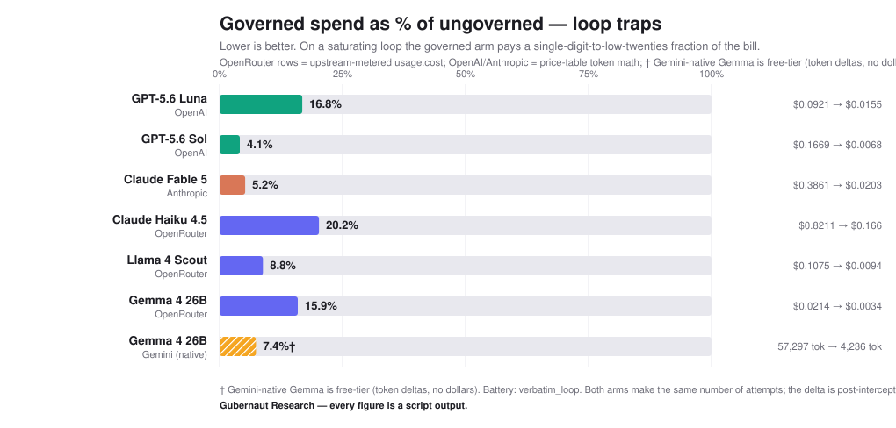

Local preview of the receipts section. Byline: Gubernaut Research.
One line to adopt:
openai.base_url = "http://localhost:8000/v1"
On a saturating loop the governed arm pays a single-digit-to-low-twenties percentage of the ungoverned bill, across every model family tested, with the hard stop at turn 4.

Regulated beats baseline in 15 of 16 generator×judge cells (11/12 off-diagonal), 13/16 at p<.05, across four frontier model families. DOI: 10.5281/zenodo.21303518.